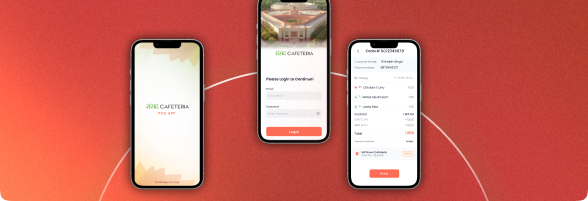

E2E
Certification lifecycle digitised
The Quality Council of India manages certification and accreditation for a wide range of organisations across India. The SAMAR (System for Assessment, Monitoring, and Review) platform digitises the complete certification lifecycle — from initial application and document submission through evaluator assignment, multi-level review, final approval, and digital certificate issuance.
By replacing legacy paper-based workflows with a unified digital backbone, SAMAR brings transparency, auditability, and faster turnaround to every stage of the certification process — benefiting applicant organisations, evaluators, and QCI’s administrative teams alike.

SAMAR was built around six integrated components — applicant portals, evaluator workflows, multi-level approval chains, digital certificate issuance, surveillance management, and operational dashboards — all running on a single digital backbone for QCI.
Self-service applicant portal for organisations to submit certification applications, upload supporting documents, and track application status in real time.
Automated and manual evaluator assignment system — matching assessors to applications based on domain expertise, availability, and conflict-of-interest rules.
Configurable multi-stage approval workflow — technical review, committee review, and final approval stages — with role-based access and full audit trail on every decision.
Automated generation and issuance of digitally signed certificates upon approval — with QR code verification and public certificate validation portal.
Periodic surveillance visit scheduling, renewal reminder workflows, and compliance monitoring for active certificate holders.
Operational dashboard for QCI management — application volumes, approval turnaround times, evaluator performance, and certificate status across all schemes.
Real results from organisations that have digitised regulatory and certification workflows with our platforms.

National platform replacing manual appliance compliance inspections with offline-first field officer app and real-time dashboards for State Designated Agencies.

Offline-capable, multilingual mobile platform deployed in tribal and remote areas for India’s national sickle cell disease eradication initiative.
.png)
Multi-outlet facility management system deployed across Parliament premises, serving Members of Parliament in one of India’s highest-security environments.

Enterprise technology platform for Munitions India Limited — secure, compliant digital infrastructure supporting a Defence Public Sector Undertaking.

Multilingual e-commerce platform for the Ministry of Education’s National Book Trust — catalogue, payments and fulfilment for India’s flagship publisher.

Digital workflow platform for the Ministry of Parliamentary Affairs — legislative session tracking, document management and inter-ministry coordination.